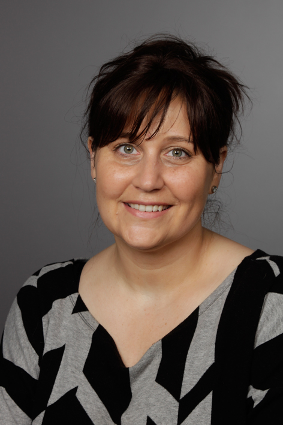

<p>
  04.02.2017:<br><br>
  Sehr geehrte Patientinnen und Patienten,<br><br>
  zu meinem großen Bedauern geht meine Arzthelferin, Frau Margot Hansel, ab dem 01.04.2017 in ihren wohlverdienten Ruhestand.<br><br>
  Ich habe Sie als ruhige, sehr freundliche, zuvorkommende und  zuverlässige Kraft wahrgenommen und fühlte mich bei der Übernahme der Praxis Drs. Stürmer von ihr sehr unterstützt und beraten.<br><br>
  Somit haben wir beide uns auf die Suche nach einer Nachfolgerin begeben und möchten Ihnen Frau Nadja Fersch vorstellen, die ab 13.03.2017 in unserer Praxis eingearbeitet wird.<br><br>
  Ich bin sicher, mit Frau Fersch ebenfalls eine kompetente Dame an der Anmeldung gefunden zu haben, die die Arbeit in bewährter Art fortführen wird.<br><br>

  04.04.2017:<br><br>
  Die Praxis ist über Ostern von Mittwoch 12.04.17 ab nachmittags bis einschließlich Ostermontag geschlossen.<br><br>
</p>


